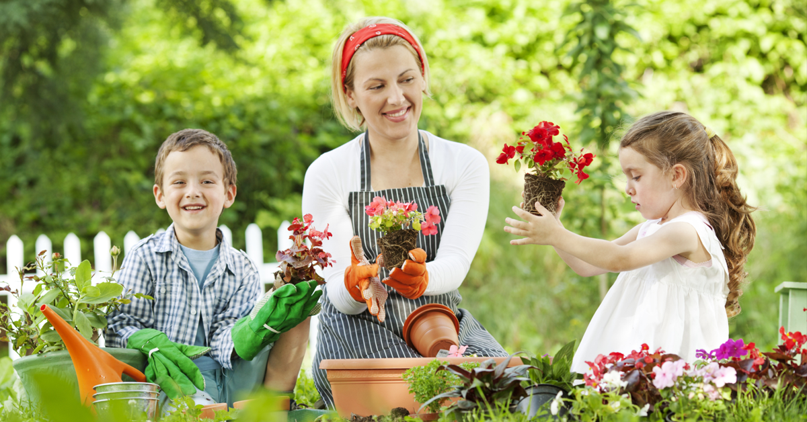
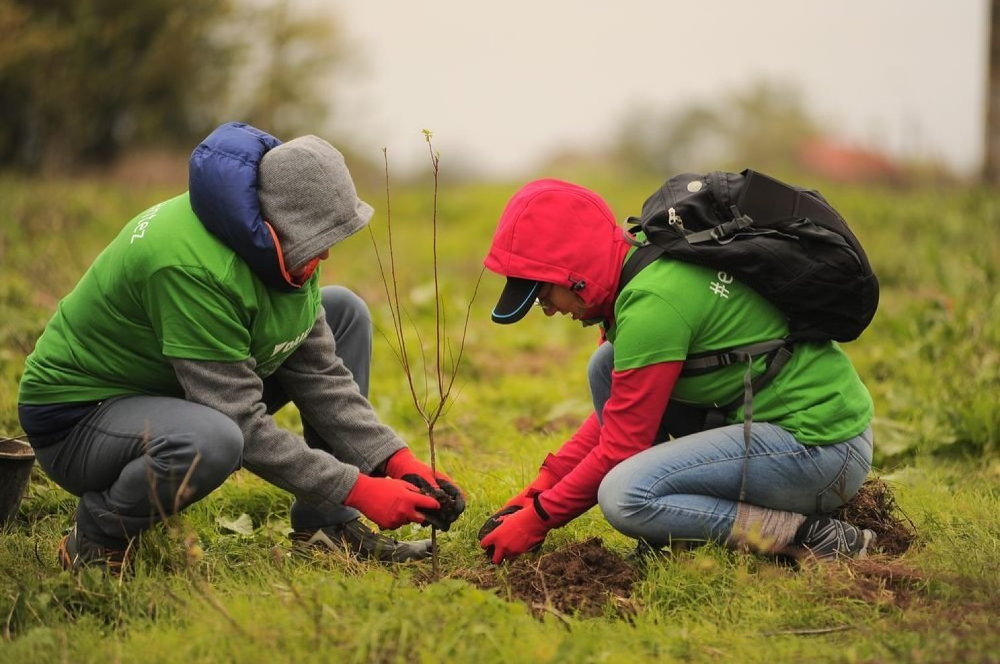

Inițiativa Verde pentru Viitor
Inițiativa Verde pentru Viitor este un proiect de voluntariat dedicat protejării mediului și educației ecologice. Scopul nostru este să mobilizăm comunitățile locale pentru acțiuni concrete care să contribuie la un mediu mai curat, o conștientizare sporită și o schimbare durabilă a obiceiurilor.
Credem că fiecare persoană poate face o diferență și împreună putem crea un impact pozitiv real. Fie că este vorba de plantări de copaci, campanii de informare sau curățenie locală, fiecare activitate este o piatră de temelie pentru un viitor mai verde.

De ce este important să susținem această cauză?
- Protejarea biodiversității și a habitatelor naturale.
- Reducerea poluării aerului și a apei pentru sănătatea noastră.
- Promovarea unui stil de viață sustenabil și responsabil.
- Crearea unui mediu curat și plăcut pentru generațiile viitoare.

Descoperă inițiativa
Beneficiile implicării în proiectul nostru
- Dezvoltare personală: Dobândești abilități noi și experiență practică în domeniul ecologic.
- Contribuție reală: Participi la acțiuni concrete care schimbă mediul în bine.
- Comunitate: Cunoști oameni cu aceleași valori și creezi legături durabile.
- Stil de viață sănătos: Activitățile în aer liber te ajută să fii mai energic și motivat.